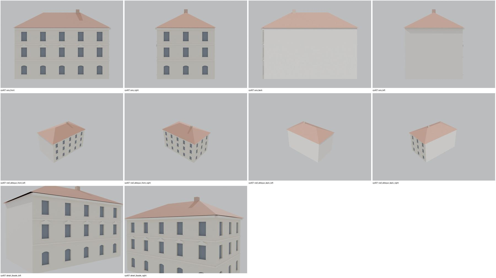

Identita domu
Samostatný třípodlažní dům s valbovou střechou v nádvoří pivovaru mezi vrátnicí a přízemní částí 110 (plán cp_437_001: „bývalý průchod“ k 110). Foto cp_437_001: nárožní pohled, bosované přízemí, 5 os na delší straně, 3 osy na kratší, komín.
Použité prameny: cp_437_001 PLANE; cp_437_001 PHOTO; FOTO-000150 (pohlednice).
GIS: GIS id 1506 (266 m², obdélník 20,9 × 12,8 m). V oblasti „Cs_Armady“ je dům veden podruhé se stejnými přílohami.
Prameny (4 příloh)
Všechny přílohy domu v databázi Libuše, každá otevřená a zapsaná v plan_search.json. Stav rešerše plánů: found; situační/střešní náčrt (ruční, nekótovaný, PLANE,BW) – není stavební výkres; půdorysné rozměry z GIS nebo odhad. Kliknutím otevřete větší náhled.

situační náčrt
SHA-256 59e70a1e9460…

fotografie
SHA-256 6e26ed1120db…

fotografie
SHA-256 a3ead86430f3…

archivní karta (rub) · výřez textu
SHA-256 aca07ad7e3a8…
Model
| Revize modelu | r2 (zachované revize: r1, r2) |
|---|---|
| Poloha | GIS půdorys id 1506 |
| Šířka průčelí | 20,98 m |
| Výška okapu | 11,40 m (odhad) |
| Podlaží | 3 |
| Střecha podle pramenů | valba |
| Střecha v modelu | valbová / sedlová (hřeben, valby, štíty) |
| Otvory | 24 |
| Vikýře / vedlejší hmoty | 0 / 0 |
| Polygonů | 465 |
Zdroje rozměrů, jak jsou zapsány v plánu modelu
| Rozměry | GIS id 1506 rectangle 20.98 x 12.78 m |
|---|---|
| Průčelí | photo cp_437_001: 3 storeys, rusticated ground floor, 5 axes long side, 3 axes short side, hipped roof, chimney |
| Střecha | hip (photo); pitch estimate |
Kontrola: 10 povinných pohledů

Nálezy
- 3 podlaží, 5 os + 3 osy na pravé straně, bosážní římsy, frontony v 1. patře, valba, komín – vše podle foto cp_437_001; audit: 2 konkávní čtyřúhelníky na průčelí (boolean), vizuálně bez vady
- r2 list znovu otevřen: beze změn proti r1 kromě uvedených oprav (1041: axis_right nyní zvenku)
Opravy
- r2: konkávní čtyřúhelníky rozděleny (fix_concave_quads)
Hypotézy
Vše níže je model_hypothesis, provisional, locked: false.
- delší (5osá) strana přiřazena k ulici podle GIS hrany
- výšky podlaží odhad
- entrance not visible on the street side; no door modelled
- all storey heights, opening sizes and roof pitches are estimates from photographs (model_hypothesis, provisional, locked=false)
Soubory
- Model čp. 437, GLB
- Pracovní složka: F:\MOST\output\zatecka_street_claude_2026-10-17\houses\cp437\
plan_search.json,geometry_plan.json,README.md,texture_handoff_spec.json,r2/cp_437_G_r2.blend,r2/qa/qa_review.json